User guide
Lodge copies your footage off a camera card or drive, names each file for you, and checks every copy with SHA-256. The window is three columns, left to right: Card, Media, and Destination. Plugging in a card does not start a copy. Import only opens Lodge with that card selected. Nothing is copied until you click Offload N Files (Offload 1 File for one file, or Offload Files when nothing is ready).
Install and first launch
Open the .dmg, and drag Lodge to Applications.
Lodge requires macOS 14.0 or later. It isn't notarized yet, which is why Open Anyway is needed the first time you open it.
macOS 15 Sequoia and later
- Open Lodge.
- Click Done on the warning.
- Go to System Settings > Privacy & Security.
- Click Open Anyway next to Lodge, and confirm.
macOS 14 Sonoma
- Right-click or Control-click Lodge.
- Choose Open.
- Choose Open again.
During setup, Return is Next: … and Save preset. The done screen has Open Settings, Open Lodge, and Skip setup. You can open Settings any time with ⌘,.
During setup, each drive shows how much space is available.
Trial and license
Try free 3 days, then $10. Every feature included. Lodge shows how many days are left each time it opens. After the trial ends, Buy appears in the app and leads to Polar.
Your first offload
When Lodge asks to import
Lodge asks Import with Lodge? when you plug in a camera card or a removable drive. It won't ask about your startup disk, a network or backup drive, a disk image, the drive you copy to, a favorite on that same drive, or a card you've told it to skip.
Lodge recognizes the folders most cameras use (for example DCIM, PRIVATE/M4ROOT, XDROOT, and CLIPS001).
Lodge waits 20 seconds before it asks about the same card again. If you plug a card in during an offload or a format, Lodge asks when that finishes.
The notification and the floating panel use the same title. A removable volume is a card. Anything else Lodge asks about is a drive. If the name is exactly card, drive, ssd, or disk, or it ends with a space plus one of those words, the title is <name> connected (for example SD Card connected). Otherwise it is <name> card connected or <name> drive connected (for example A7S III card connected or T7 drive connected).
The notification has three actions: Import, Ignore, and Don’t Ask for This Card.
Lodge shows the same prompt as a floating panel when permission is still undecided, alerts are off, the notification style is None, or Ask with is Floating panel. Its buttons are Import, Ignore, and Don’t ask for this card. The panel does not take the keyboard, so Return does not press Import.
If you don't see the prompt, set Settings ▸ General ▸ Menu Bar ▸ Ask with to Floating panel.
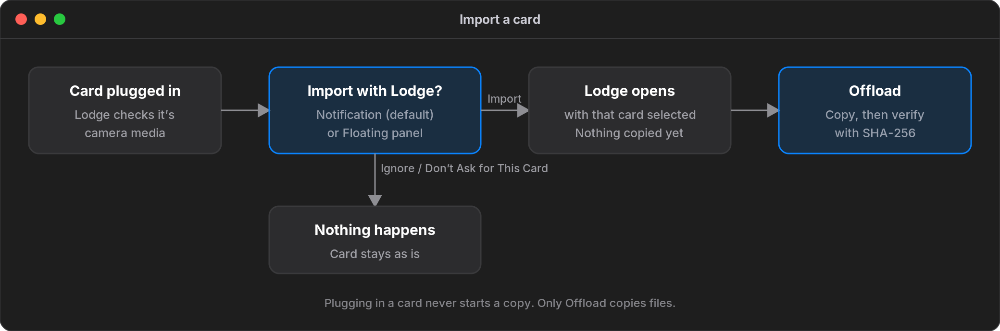

Import opens Lodge with that card selected. Nothing is copied yet. Notifications are the default.
If card detection is paused, choose Resume Detection in the menu bar menu. That does not resume an offload.
Offload
- Insert a card.
- Enter a project name if the template needs one.
- Choose a destination.
- Click Offload N Files.
While Lodge is ready, the bar says Ready. Every file is verified with SHA-256 after copying. The button help is Copy and verify the new files. You'll see Copying, then Verifying.

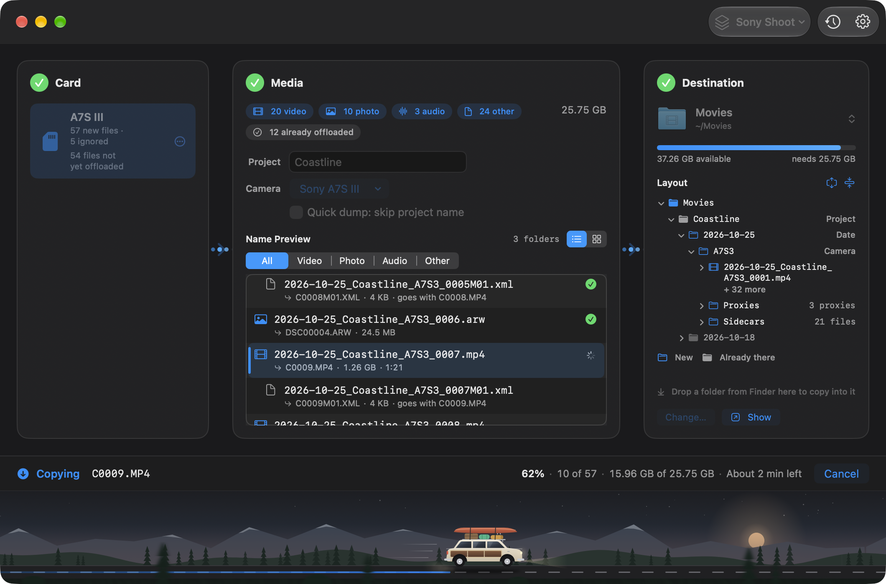
You can also press Return to start.
If Offload N Files cannot start, its caption is one of the messages in Why Offload is waiting.
Verification
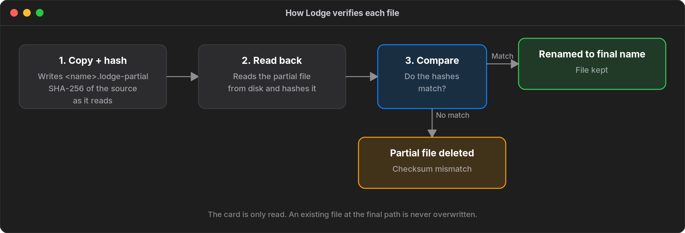
Lodge copies one file like this:
- It writes
<final name>.lodge-partialand hashes the source with SHA-256 as it reads. - It reads that partial file back from disk and hashes it.
- If the hashes match, it renames the partial file to the final name. If they do not, it deletes the partial file.
Lodge never changes anything on your card, and it never overwrites a file that's already at the destination.
Lodge remembers a verified copy by the card’s volume UUID, or the volume name when there is no UUID, plus the path on the card, the size, and the modification time in whole seconds. That match is not a content hash. Change the size or the modification time and Lodge treats the file as new. A copy counts as missing when that same record matches and the file at the destination is gone, or its size differs.
What you see when a file fails starts with the path on the card, then the reason. For example: DCIM/100MEDIA/C0001.MP4: C0001.MP4 already exists — not overwriting it. The reason is one of:
<name>already exists — not overwriting it.- Couldn’t create
<name>in the destination. - Checksum mismatch for
<name>. The copy was deleted.
When the batch finishes, the title is Offload Complete, Finished with Problems, or Offload Cancelled.
The line under it is <copied> copied · <skipped> skipped · <failed> failed. If the card is already gone after an eject, that line gains ** — card ejected, safe to remove**.

If a copy Lodge expected is missing at the destination, Offload tells you to choose Re-offload. The wording is in Re-offload.
Naming templates and tokens
The default folder template is {date}/{project}. The default file template is {date}_{project}_{seq}.
To start from a ready-made template, choose Examples in Settings ▸ Naming. The choices are Date / Project, Project / Date / Camera, Project / Type / Date, Year / Month / Day, Date / Project, Original Names, and Flat.
| Token | Meaning in the template editor | Rendered value |
|---|---|---|
{project} |
Project name | the project field |
{camera} |
Selected camera | the camera’s code, when cleaning leaves one; otherwise the cleaned camera name |
{date} |
Capture date (2026-10-25) | yyyy-MM-dd |
{year} |
Year (2026) | yyyy |
{month} |
Month (10) | MM |
{day} |
Day (25) | dd |
{time} |
Capture time (143005) | HHmmss |
{type} |
Video, Photo, Audio or Other | Video, Photo, Audio, or Other |
{card} |
Card (volume) name | the volume name, cleaned like the project name. If that is empty, Card |
{original} |
Original file name, no extension | the source name, made safe |
{seq} |
Sequence number (0001); {seq:3} for 001 | at least 4 digits, unless {seq:N} says otherwise |
{ext} |
File extension (mp4) | the extension, lowercased |
In a file or folder name, /, :, \, *, ?, ", <, >, |, and control characters become -. Spaces at the ends are trimmed, and leading dots are stripped so the name is not a hidden file.
The project name is cleaned separately. Letters, digits, and - stay. Any other character splits a word, and each word is capitalized, so "beach day" becomes BeachDay. The result is at most 60 characters, and leading or trailing - is removed.
Sequence numbers continue after the highest number already in the destination folder.

Inside the shoot folder, each extension gets its own folder. .jpeg and .jpe share JPG. .tiff shares TIF. {ext} stays that file’s own extension, lowercased.
Presets and quick dump
Saved presets start empty. The menu at the top right, just before Recent Offloads and Settings, lists them. It also has Save Current Setup as Preset…, Update “name” after you edit the setup in use, and Manage Presets…. Manage Presets… opens Settings ▸ Presets, where you rename, apply, duplicate, delete, reorder, and edit a preset. Presets are stored in ~/Library/Application Support/Lodge/presets.json.
A preset saves where files go, how they're named, the camera, short-clip skipping, quick dump, and the file rules. With no preset chosen, the menu says No Preset. The photo-session setup uses the Date / Project naming example and suggests the preset name Photo Session.
On the setup done screen, Return can be Offload with <preset>.
Quick dump sits under Project in Media. It is off until you turn it on. The hint says Skips the project name and dumps all the footage straight into a dated folder. While it is on, the Project field is disabled and its prompt is Not needed for a quick dump. {project}, and the old {shoot} token, are taken out of the templates used for that offload only. The templates you saved stay as written. Empty folder levels disappear, so {date}/{project} becomes {date} and {date}_{project}_{seq} becomes {date}_{seq}. If the file template would have no token left, it becomes {date}_{seq}. The project you typed is not saved as the last project. Sequence numbers still continue. Each extension still gets its own folder. Proxies still go in Proxies/ and sidecars in Sidecars/. A level Quick dump removes is struck through and tagged Quick dump.
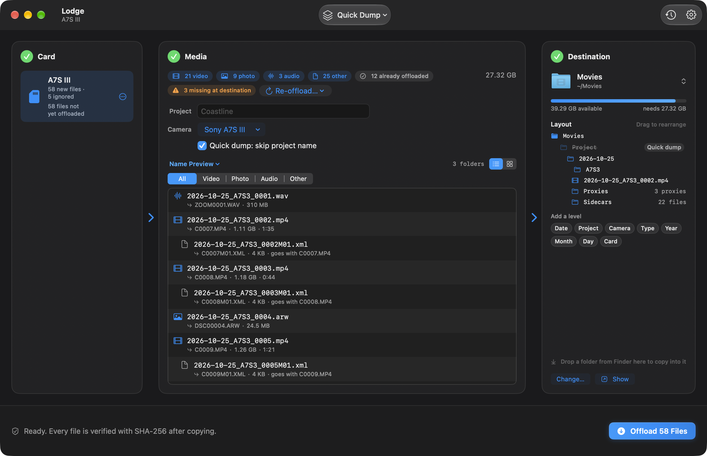
Sidecars and proxies
Proxies go in Proxies/. The default proxy extensions are lrv and lrf.
Sidecars go in Sidecars/. The default sidecar extensions are thm, xml, and srt.
They keep the clip’s new name.
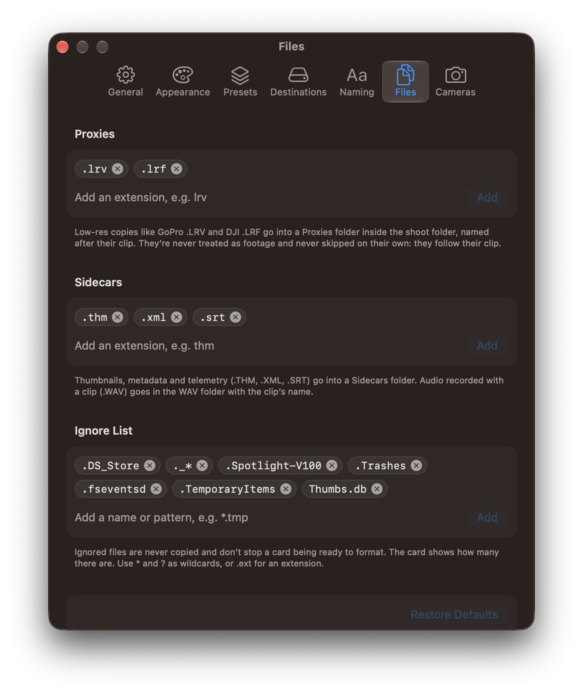
By default, Lodge skips system files such as .DS_Store, ._*, .Spotlight-V100, .Trashes, .fseventsd, .TemporaryItems, and Thumbs.db.
When a date filter is on, sidecars and proxies go with their clip. Everything else outside the chosen days stays on the card.
Filtering by date and skipping short videos
Dates is Any date until you change it. The other choices are Today, Last 7 days, and Custom range.
The date-filter help says: Copies only files from these days, by the date each file was created (or last changed, if the card doesn’t record that). Sidecars and proxies go with their clip. Everything else stays on the card.
If the chosen days leave nothing new, Media shows Nothing in These Dates. Click Show Any Date to see everything. Offload N Files says Nothing new in the chosen dates — choose Any date to see everything.
Short clips skips videos shorter than the time you set. The slider runs from Off to 30 s. The stepper beside it goes up to 60 seconds. The default is 5 seconds, with skipping on.
If the only videos left were skipped for length, Offload says one of:
- Only a short clip is left — choose Include Anyway to offload it
- Only short clips are left — choose Include All Short Clips to offload them
Destinations and space
Until you pick a folder, the Destination stage shows No Destination. Click Choose Folder…, or drop a folder on it from Finder.
Offload N Files stays off, and says why, in these cases:
- Choose a destination folder
- The destination folder isn’t connected — choose another
- Not enough space: needs
<needed>,<available>free
Each favorite shows how much space is available. A favorite that isn't plugged in says Not connected.
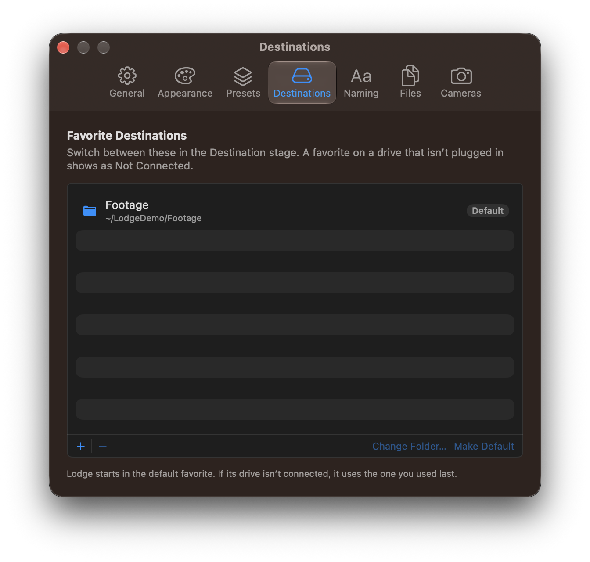
Under the destination, Lodge shows <bytes> available, and needs <bytes> once there's something to copy.
A read-only destination uses one of:
- This drive is read-only, so Lodge can’t write to it — choose another when Lodge has no format name
- This drive is read-only (NTFS). macOS can’t write to it.
- This drive is read-only (
<format>), so Lodge can’t write to it — choose another for any other format
Format names Lodge recognizes are NTFS, exFAT, FAT32, Mac OS Extended, and APFS.
Re-offload
When copies are missing at the destination, Offload N Files says:
- 1 copy is missing at the destination — choose Re-offload
<n>copies are missing at the destination — choose Re-offload
In Media, Re-offload… is Re-offloading N while it is running. Its rows are Re-offload Missing Copies (with the count when there is one), Re-offload Everything on This Card…, and Don’t Re-offload while a re-offload is active. On a file, the menu is Re-offload This File or Don’t Re-offload This File.
Re-offload Everything on This Card… opens an alert whose buttons are Re-offload Everything (Return) and Cancel. That alert has no destructive button.
Forget This Card’s History… in Card actions opens an alert whose destructive button is Forget History. Return is Cancel.
Eject or format the card
The manual command is Eject Card. After the card is gone, the label is Ejected.
Eject Card in the card menu is disabled during an offload, a format, or an eject. On the finish bar it is disabled only when the card is already gone, or while an eject is in progress. A format does not disable the finish-bar button.
Eject card after offload is off. Its caption is Only when every file was copied and verified. With it on, the card ejects only when the offload was not cancelled, nothing failed, at least one file was copied, and the card is still present. The same switch ejects the card after a successful format. After a successful eject, the finish line can end with ** — card ejected, safe to remove. If eject fails, that line ends with ** — Couldn’t eject <card name>: <system message>.
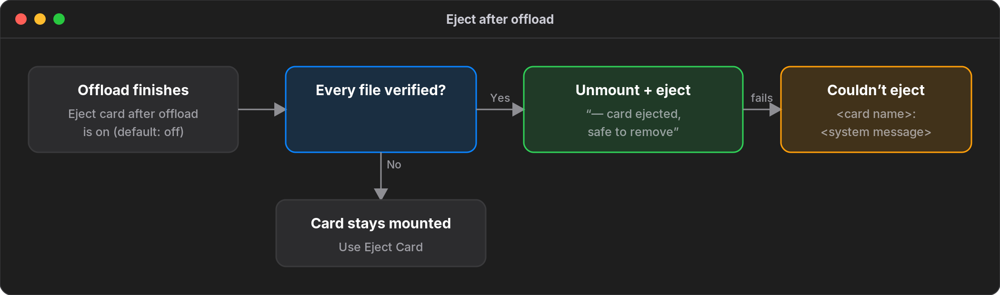
The Ready to format badge shows when the card has at least one file, every file still has its copy at the destination at the same size, and no skipped short clip remains. Ignored system files do not block it. It appears on the selected card’s row and beside the finish-bar title. Its help is Every file on this card has a verified copy at the destination.
If the only leftovers are skipped short clips, the badge stays off. The line reads 1 short clip not offloaded or N short clips not offloaded. Format Card…, in Card actions (the ⋯ button on the card) or on the finish bar, can still be used then. When the card is fully ready, its help is Erase this card so it’s ready for new footage.
Choosing Format Card… does not erase the card by itself. Lodge erases it only after you confirm. Formatting erases everything on “<name>” was formatted and is ready for your camera.
On the format confirmation, Return is Cancel. Format, Format and Discard 1 Short Clip, and Format and Discard N Short Clips have no key. The title is Format “<card name>”?
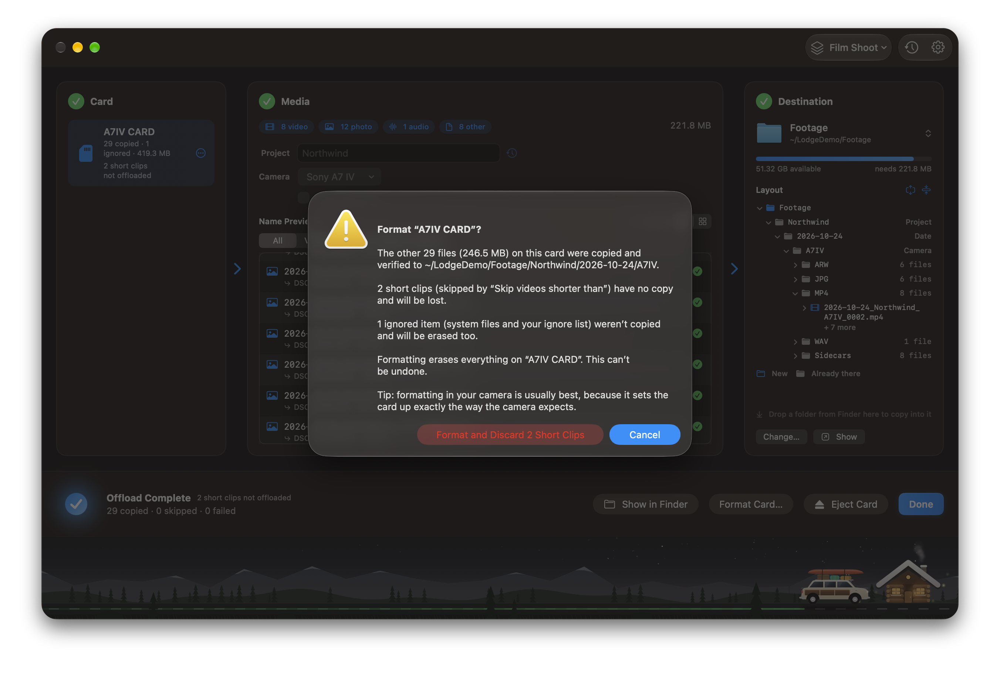
Menu bar mode
Turn on Keep Lodge running in the menu bar (off by default) so Lodge can watch for cards when its window is closed.
These sit with it:
| Setting | Default |
|---|---|
| Ask to import when a card or drive is plugged in | on |
| Show menu bar icon | on, and only shown while menu bar mode is on |
| Ask with | Notification (the other choice is Floating panel) |
| Open at login | off |
Allow Lodge in System Settings ▸ General ▸ Login Items. appears only while macOS is still waiting for you to approve Open at login.
The menu bar menu has:
- Open Lodge
- Cards & Drives, or No Cards Connected when nothing is mounted
- Import from
<name>… for a connected card - Offloading… (imports wait until it’s done) while a copy is running.
- Pause Detection, or Resume Detection while detection is paused
- Settings… (⌘,)
- Quit Lodge (⌘Q)
⌘-drag the menu bar icon out to turn Show menu bar icon off. If the icon is hidden, the hint says to quit with ⌘Q.
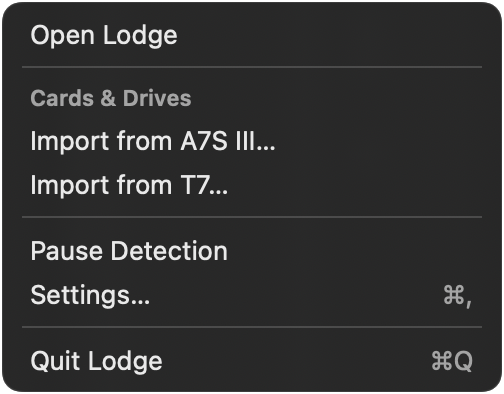
Settings reference
Settings tabs are General, Appearance, Presets, Destinations, Naming, Files, and Cameras.
In Settings ▸ Appearance, pick a theme: Default, Aurora, Ocean, Twilight, Ember, or Forest. Then pick System, Light, or Dark. Lodge starts in Dark, with the Default theme.
Show files as is List. The other choice is Grid. Show thumbnails in the list is off.
General groups these sections: Files to Offload, Short Clips, After Offload, Menu Bar, and Updates.
| Setting | Default |
|---|---|
| Destination folder | none, until you choose one |
| Eject card after offload | off |
| Folder template | {date}/{project} |
| File template | {date}_{project}_{seq} |
| Last project | empty |
| Recent projects | empty, and at most 6 |
| Files to offload | Video, Photos, Audio, and Other all on. The media filter says Photo. |
| Play a sound when an offload finishes | on |
| Short clips | On, 5 seconds. Slider from Off to 30 s; the stepper goes to 60 seconds. |
| Theme | Default |
| Appearance | Dark |
| Show files as | List |
| Show thumbnails in the list | off |
| Quick dump | off |
| Dates | Any date |
| Keep Lodge running in the menu bar | off |
| Ask to import when a card or drive is plugged in | on |
| Show menu bar icon | on, while menu bar mode is on |
| Ask with | Notification |
| Open at login | off |
| Don’t ask for these cards | empty |
| Proxies | lrv, lrf |
| Sidecars | thm, xml, srt |
| Ignored names | .DS_Store, ._*, .Spotlight-V100, .Trashes, .fseventsd, .TemporaryItems, Thumbs.db |
| Automatically check for updates | on |
| Update check interval | once a day |
| Automatically download and install updates | off |
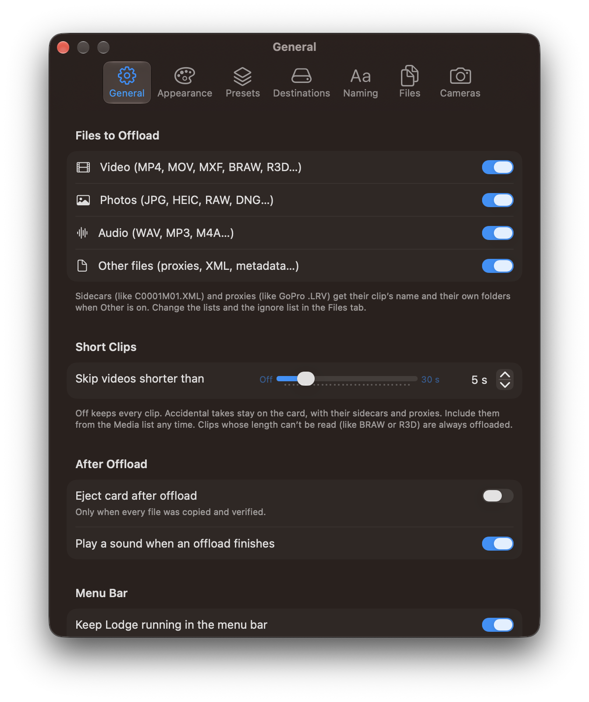
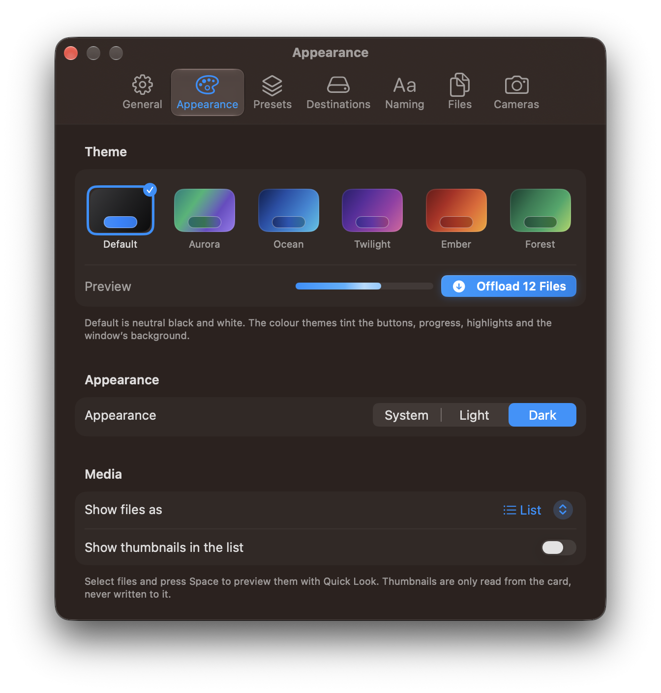
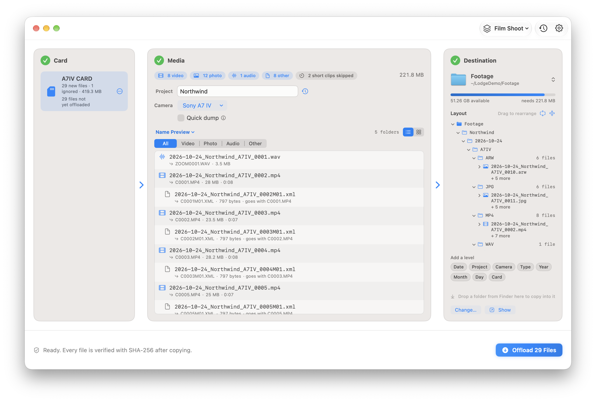
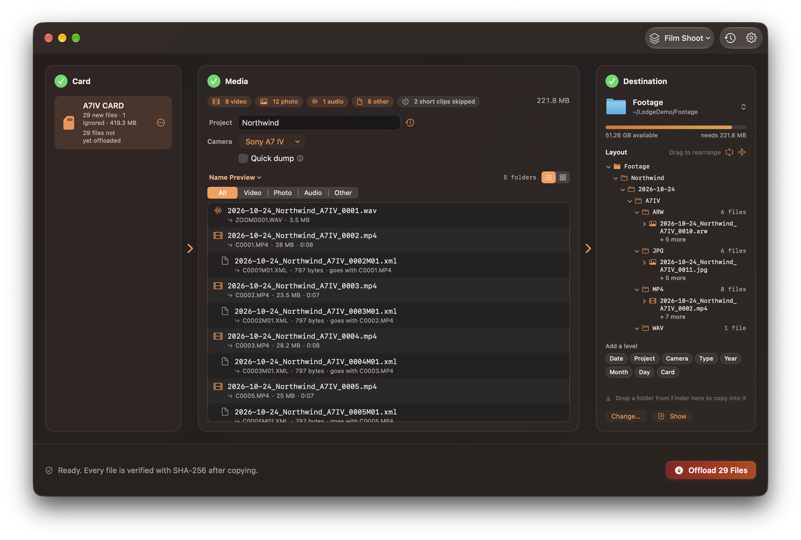
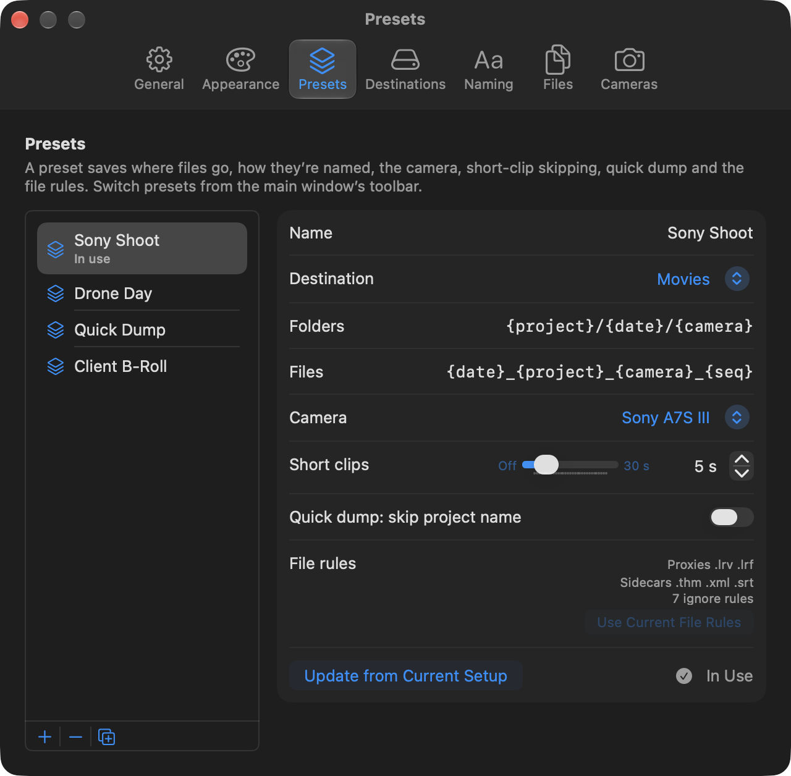
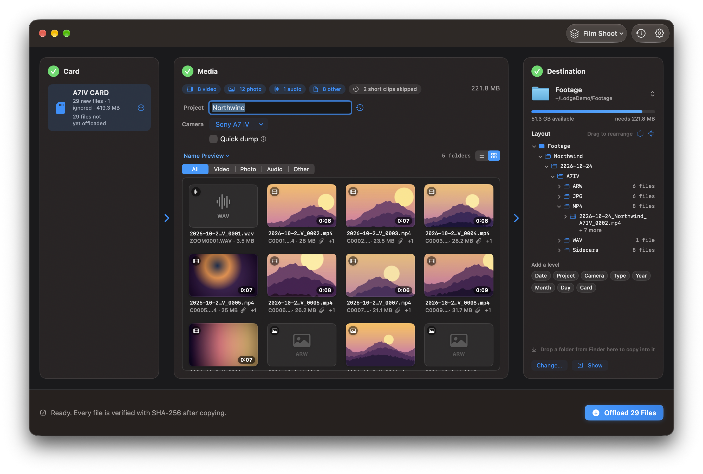
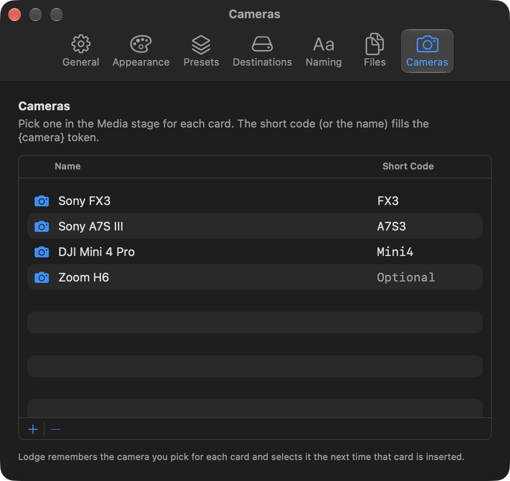
The updates footer says: Lodge checks for a new version once a day. You can also choose Lodge ▸ Check for Updates… any time.
Keyboard shortcuts
| Shortcut | What it does |
|---|---|
| ⌘, | Settings. The menu bar item uses the same key. The setup done screen shows ⌘ ,. The Settings toolbar help is Settings (⌘,). |
| ⌘Q | Quit. The hidden-icon hint says quit it from there with ⌘Q. |
| ⌘-drag | Drag the menu bar icon out to turn Show menu bar icon off. |
| Return | Offload N Files, Done, Get started, and Offload with <preset>. During setup, Next: … and Save preset. On the format confirmation and on Forget History, Return is Cancel. On Re-offload Everything, Return is that button. Return does not press Import on the floating panel. |
| Escape | Cancel during an offload. Maybe Later on the support note. Clears the selection in the list or grid. |
| Space | Quick Look on the selection. Space again closes Quick Look. The list and grid hint is Press Space to preview the selected file with Quick Look. |
| Up, Down, Left, Right | Move the selection in the list or grid. |
| ⌘-click | Toggle a file in the selection. |
| Shift-click | Extend the selection. |
| Double-click | Quick Look. |
The destructive buttons on the format confirmation and on Forget History have no keyboard equivalent. The other re-offload alert has Re-offload Everything (Return) and Cancel, and no destructive button.
Troubleshooting
Why Offload is waiting
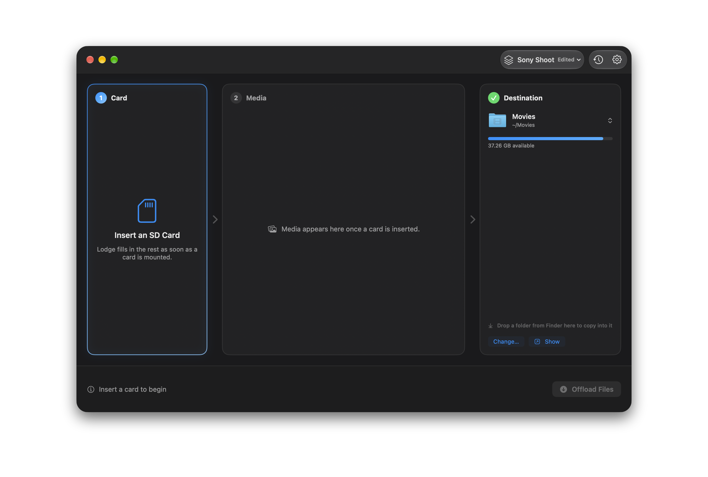
| Message | What it means |
|---|---|
| Insert a card to begin | No card yet. |
| Scanning card… | Lodge is still reading the card. The card column says Scanning…. |
| This card is empty | There is nothing to copy. |
| Enter a project name | The template uses {project}. |
| Choose a camera | The template uses {camera}. |
| Fix the naming template in Settings | The template is not usable. |
| Choose a destination folder | No folder yet. |
| The destination folder isn’t connected — choose another | That drive is not mounted. |
Not enough space: needs <needed>, <available> free |
The destination doesn't have room for this copy. Choose another folder, or make room. |
| 1 copy is missing at the destination — choose Re-offload | One expected copy is missing. See Re-offload. |
<n> copies are missing at the destination — choose Re-offload |
Some files Lodge copied before are gone from the destination. Choose Re-offload to copy them again. |
| Only a short clip is left — choose Include Anyway to offload it | The only remaining video was skipped for length. |
| Only short clips are left — choose Include All Short Clips to offload them | The only remaining videos were skipped for length. |
| Nothing new in the chosen dates — choose Any date to see everything | The date filter is hiding every new file. |
| Everything on this card is already offloaded | There is nothing new to copy. |
A copy that does start can still fail. The list shows the path on the card, then one of:
<name>already exists — not overwriting it.- Couldn’t create
<name>in the destination. - Checksum mismatch for
<name>. The copy was deleted.
If the destination is read-only
- This drive is read-only, so Lodge can’t write to it — choose another
- This drive is read-only (NTFS). macOS can’t write to it.
- This drive is read-only (
<format>), so Lodge can’t write to it — choose another
Recognized format names are NTFS, exFAT, FAT32, Mac OS Extended, and APFS.
Report a bug
Report a Bug… is in the Help menu, alongside Contact Support… and Support Lodge…. It opens an email to bashframes@gmail.com. Nothing is sent until you send it.
The subject is Lodge bug report (version <version> build <build>).
The body starts with What happened? and one of:
- (What were you doing, and what went wrong? Steps to make it happen again help a lot.)
- (Lodge quit unexpectedly. What were you doing just before?)
Then Lodge <version> (build <build>), macOS <version>, and Mac: <model>, <chip>. Up to 200 of Lodge’s own log lines from the last three days go into the report. Paths under your home folder, /Volumes, /Users, /private, /var, and /tmp are replaced with <path>.
When Mail opens, the body lists Attached: Lodge log.txt and the log is that attachment. An empty log file contains (nothing logged recently). A crash report goes out as a .txt file. With no Mail account, the message is a mailto: link: the log is in the body under Lodge’s recent log:, nothing is attached, and if a crash report was part of the send the body adds (The crash report couldn’t be attached. It’s in Console ▸ Crash Reports, under Lodge.).
Lodge asks Lodge quit unexpectedly last time. Send a crash report? when a Lodge-….ips or Lodge_….crash report is newer than the last one it recorded. The first launch that sees this records the newest report and does not ask. It is also skipped in demo mode. The detail is This opens a new email to bashframes with the crash report and Lodge’s recent log attached. File, card and drive names are left out. You can read it over before sending. The buttons are Send Report and Not Now. Each report is offered once.
If the card won't eject
The finish line ends with ** — Couldn’t eject <card name>: <system message>**.
Updates
Automatically check for updates is on. Lodge checks once a day. Automatically download and install updates is off.
The footer says: Lodge checks for a new version once a day. You can also choose Lodge ▸ Check for Updates… any time.
Privacy
No account, no analytics, and copying never uploads anything. Lodge goes online for a daily update check, which you can turn off in Settings > General, and to activate your license with Polar and confirm it about once a week.
Support
If Lodge saves you time, you can leave a tip on Ko-fi. Tips are optional and separate from the $10 license.
The support note is titled Support Lodge. Its body is Lodge is made by one person at bashframes. If it saves you time, you can chip in on Ko-fi. Thank you! The buttons are Don’t Ask Again, Maybe Later (Escape), and Support Lodge. Support Lodge opens ko-fi.com/bashframes.
The note shows only when all of these are true:
- at least 5 offloads where every file was copied and verified
- at least 3 days after this version was first launched
- it has been shown fewer than 2 times
- you have not chosen Support Lodge or Don’t Ask Again
- the next ask date is unset or has passed
Maybe Later waits 30 days. The note is not shown during a copy or a format.